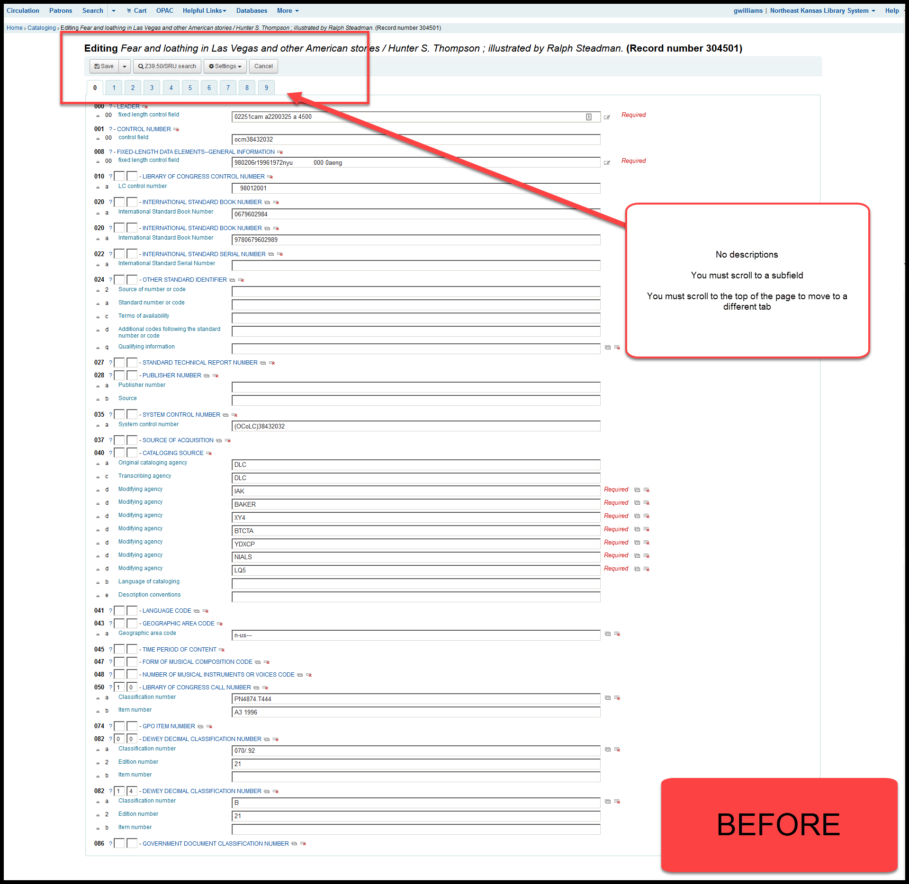
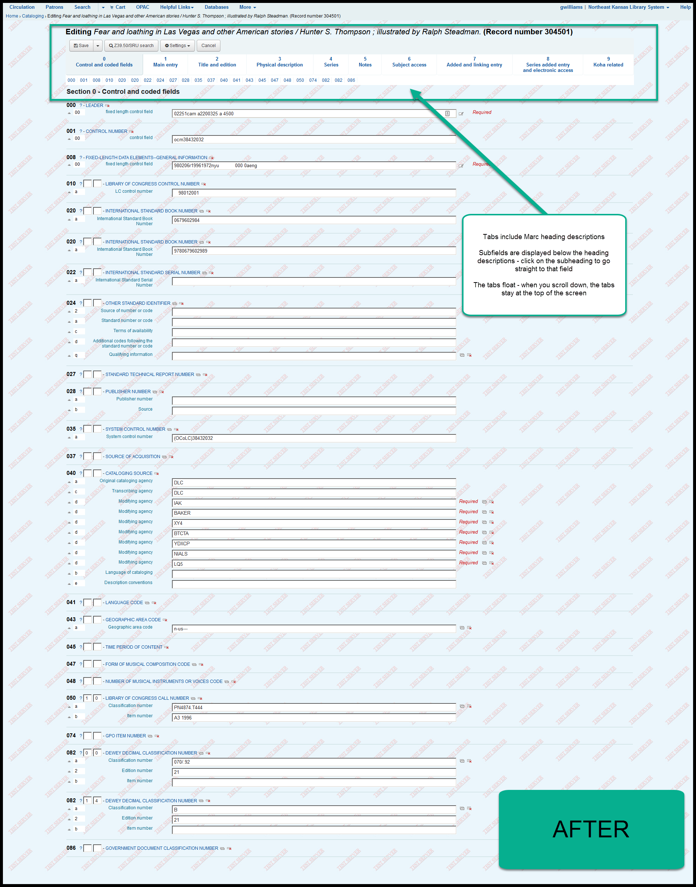
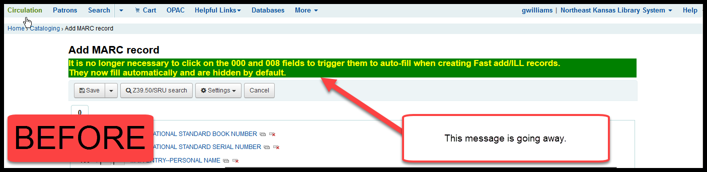
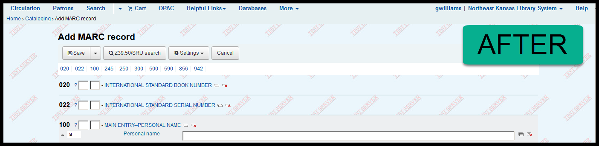
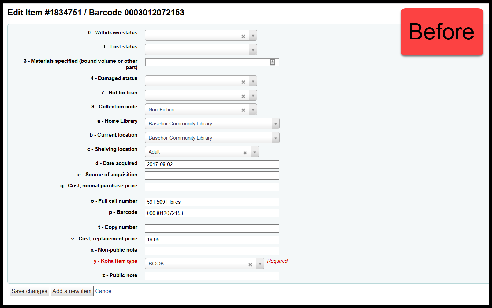
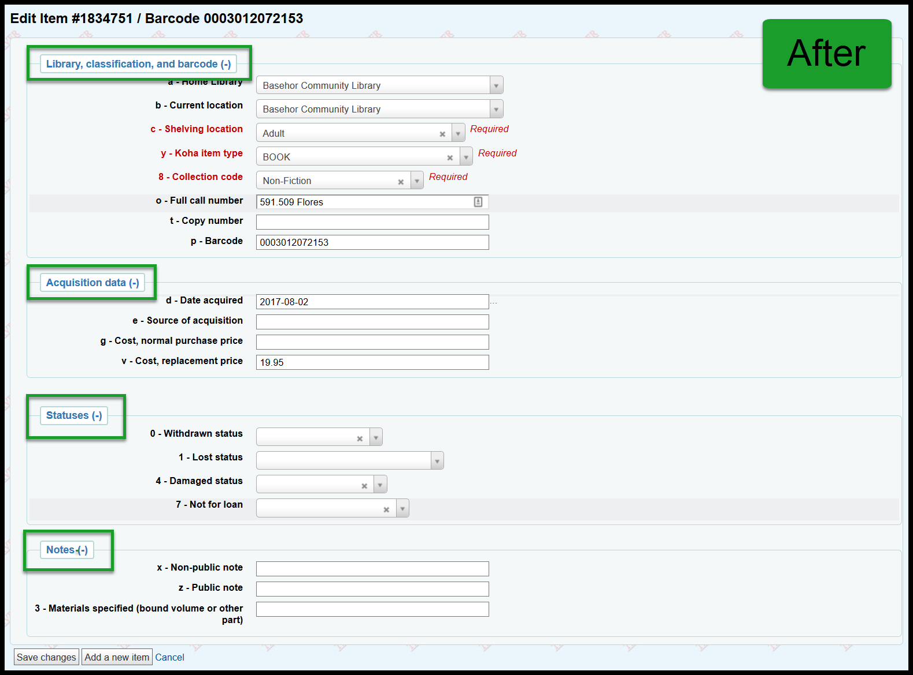
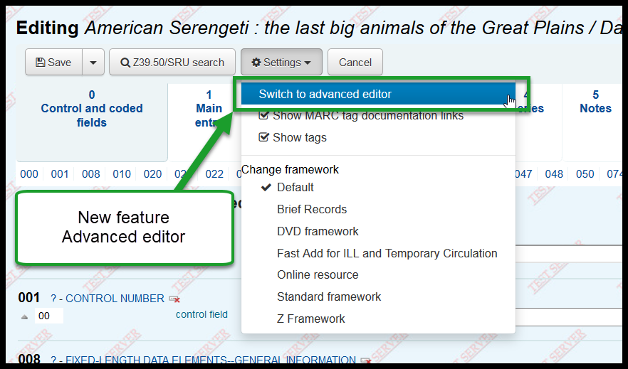
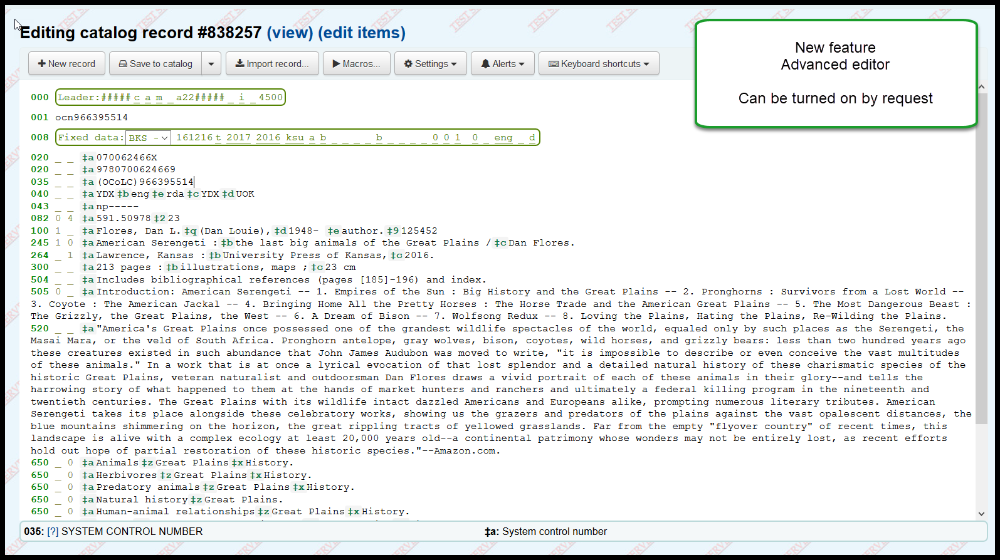

Koha Upgrade - Cataloging¶
Cataloging changes¶
Changes in the edit bibliographic record interface¶
When entering a new bibliographic record, the look and layout of the 000, 100, 200, etc. tabs have changed.
Currently we see:
After the upgrade we will see:
Removal of outdated message on Fast add framework¶
In October we modified the Fast add framework so that the 000 and 008 fields were no longer required on Fast add records (ILL records).
After the upgrade the “It is no longer necessary …” message on the “Fast add” framework will be removed.
Currently we see:
After the upgrade we will see:
Add/edit item interface¶
The fields in the add/edit item editor are the subfields from the 952 field in the Marc record. They are currently arranged in alphanumeric order by subfield code. After the upgrade they’ll be grouped by their function.
Currently we see:
After the upgrade we will see:
Advanced cataloging editor¶
The advanced cataloging editor has been a part of Koha for several years now, but we have not turned it on because there is a potential that an untrained staff member could accidentally damage bibliographic records with this tool.
After the upgrade the advanced cataloging editor has been tied to a security setting so it can be turned on for specific individual staff members that have been trained in how to use it.
To access the editor, look under the “Settings” button:
Once the editor is open, you should see this interface:
